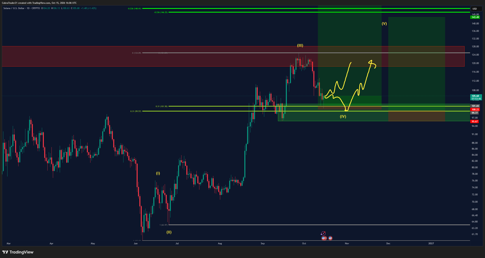
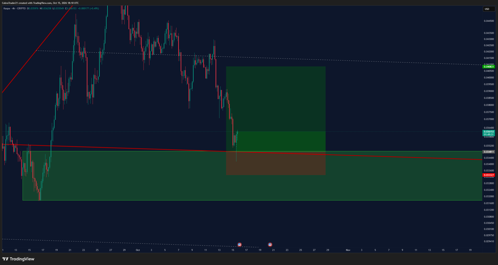
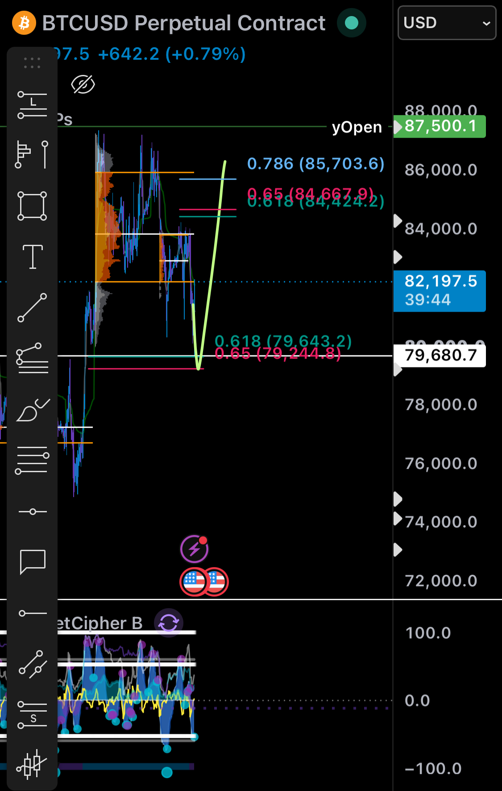
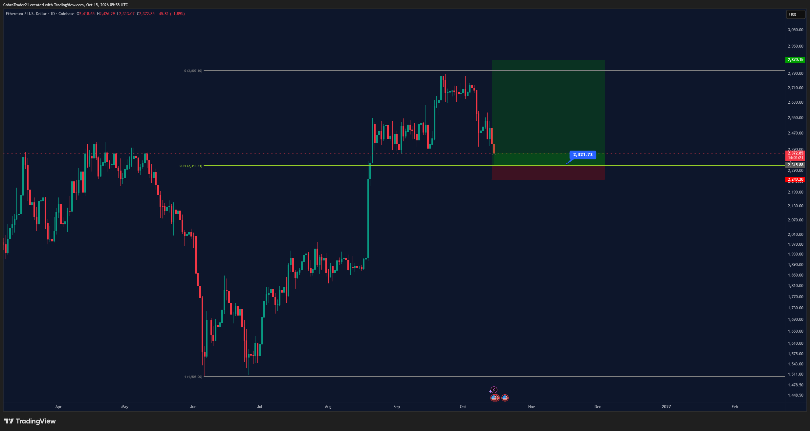

📡 Trades do Discord – 15/10/2026
Preços: BTC 82.486 · ETH 2.463 · SOL 106,11 · APT 0,8314 · ASTER 0,7041 · KAS 0,0362
- 🟠 Ordem limite pendente: o trade foi postado, mas o preço ainda não chegou na entrada.
- 🟢 Posição aberta: a entrada já foi executada e o trade está valendo.
- 🔴 Estopou: o preço bateu no stop e o trade foi encerrado com perda.
- 📐 Plano no gráfico: cenário desenhado pelo analista, ainda sem ordem.
- Entrada é o preço para entrar; stop é onde se sai se der errado; alvo é onde se realiza lucro. A barra mostra quão perto o preço está da entrada (cheia = quase lá). O sinal ≈ indica valor lido no gráfico.
CobraTrades #VIP-trades, Adaśko VIP e vip-cobra-updates
Trades VIP do Cobra. A cor da bolinha no nome do canal mostra o estado do trade.
MUDANÇA vs meio-dia: às 12:53 moveu o stop de 2.233 para a entrada (2.317) e disse que o TP1 (2.415) foi smashado. Ainda aberto, alvo restante 2.852. Preço ~2.463 — bem acima da entrada, stop no zero a zero. Long contra o 12h e o 1D (divergência de baixa confirmada).
Sem mudança de nível vs meio-dia (stop já estava na entrada desde 12:06). Às 13:06 no vip-cobra-updates confirmou: stop no breakeven e, se cair, ele reabre o long. Ainda aberto. Long contra o 12h e o 1D.
Níveis iguais. Novo post às 15:10: "How many longed KAS?" + gráfico (sem níveis novos). Sem par spot na Binance (Gate.io ≈0,0362).
Sem mudança: saiu na mão às 11h de ontem. Sem novo BTC long.
Sem mudança desde 04/10. A favor do 12h e do 1D, mas longe (~7% acima).
Sem mudança desde 21/09. A favor do 12h e do 1D, longe.
Ordem antiga (13/08), sem atualização.
Sem atualização desde 17/09. Continua 🟢.
Não existe canal APT em VIP-trades. Sem menção nova após o meio-dia. APT ≈0,831 na Binance.
Sem mudança desde 05/09. Preço muito abaixo da entrada.
Sem mudança desde 25/09. Adaśko sem post novo após 10:13.
Jayson Casper #jayson-btc-ta
BTC perpétuo na Bybit. Valores com ≈ foram lidos do gráfico.
Ainda aberto (último post 12:22, sem close). Às 12:21 falou de divergências de alta no 4h e quer reclaim do value area low para ir ao topo da range. Stop/alvo ≈ do snapshot (ele não escreveu os números). Long contra o 12h e o 1D; o 4h que ele cita é tempo gráfico menor.
NOVO vs meio-dia: às 12:21 disse que no topo da range vai procurar outro short. Sem níveis. No gráfico dele aparecem fibs ≈84,4k–85,7k (topo aproximado) — só leitura visual, ele não confirmou.
Sem novo post sobre essa zona.
Sem novo post.
Zona onde ele entrou hoje (80.250).
Front-runado ontem; sem mudança.
Sem mudança. A favor do 12h e do 1D. Longe do preço atual.
Sem mudança. A favor do tempo gráfico maior.
Histórico; encerrado em 12/10.
- O que mudou desde o meio-dia: o Cobra moveu o stop do ETH long 2 para a entrada (2.317) e confirmou TP1 (2.415) batido às 12:53; às 13:06 reiterou SOL com stop no breakeven e plano de reabrir se cair; às 15:10 perguntou quem entrou em KAS (sem níveis novos). O Jayson às 12:21 falou de divergências de alta no 4h, quer reclaim do VAL, e disse que no topo da range procura outro short (sem número).
- Bolinha dos canais: nenhuma mudou (ETH/SOL/KAS 🟢, BTC long 🔴, shorts 🟠).
- Pela regra do tempo gráfico maior: 12h e 1D de BTC/ETH/SOL seguem com divergência de baixa confirmada. Os longs abertos (Cobra ETH/SOL/KAS e Jayson) vão contra essa leitura; o short pendente do Cobra e os planos de short do Jayson (84.300 / topo da range) vão a favor, mas ainda longe. O 4h do Jayson é tempo menor e não anula o 12h/1D.
- Nenhum alerta novo no TradingView: as mudanças foram em trades já abertos (stop/TP) ou plano sem nível. Seguem os antigos COBRA/JAYSON (não apagados). Alertas de entrada já fillados (ETH 2.317, SOL 101,37, Jayson long alt 80.300) perderam sentido operacional, mas ficam na lista.

Cobra, 15/10 12:53: ETH long 2 — stop na entrada e TP1 smashado.

Cobra, 15/10 13:06: SOL — dois cenários; stop no breakeven.

Cobra, 15/10 15:10: KAS — "How many longed KAS?" (sem níveis novos).

Jayson, 15/10 12:21: divergências de alta no 4h e plano de short no topo da range.

Cobra, 15/10 06:58: ETH long 2 filled (entrada 2.317) — contexto da manhã.

Jayson, 15/10 10:37: posição long 0,6229 BTC @ 80.250,1 — ainda aberta.